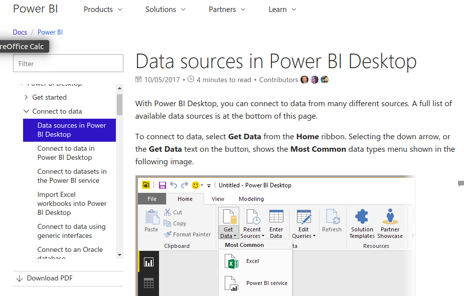

<div class="helpPage">
	<button type="button" class="btn btn-link" (click)="clickBackButton()">Back</button>
		
		
	Demo for Canvas ...
	<br> 
	
	
	
	
	<br> 
	Currently a routed page - no idea if that is good or not

	Sample page from Microsoft Power BI documentation:

	
</div>
	